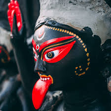
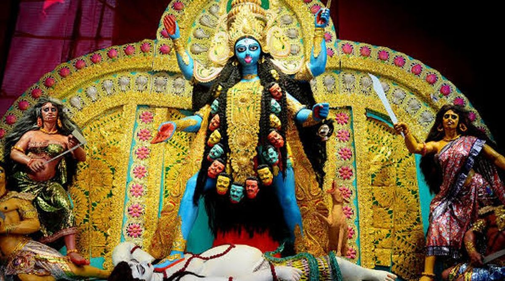
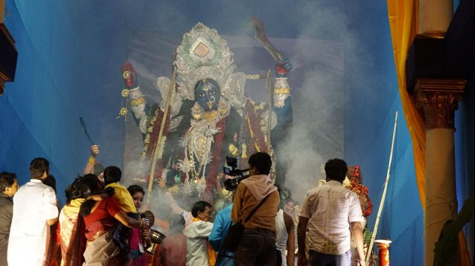
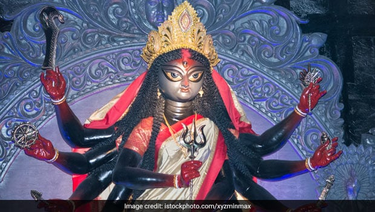

|  |
Kali Puja, also known as Shyama Puja or Mahanisha Puja, is a festival, originating from the Indian subcontinent, dedicated to the Hindu goddess Kali, celebrated on the new moon day (Dipannita Amavasya) of the Hindu month Kartik especially in the regions of Bengal, and in Mithila, Odisha, Assam and the town of Titwala in Maharashtra.[2] It coincides with the Lakshmi Puja day of Diwali. While the Hindu Bengalis, Odias, Assamese and Maithils worship the goddess Kali on this day, the rest of India and Nepal worships goddess Lakshmi on Diwali. |
As per the Kalikula sect of Shaktism, the supreme celestial Mother goddess Mahakali took 10 manifestations to slay evils on the Earth, which are collectively known as Mahavidyas. Each Mahavidya has a day of incarnation in the Hindu calendar of 12 months. Out of those 10 Mahavidyas, the last goddess is Kamalatmika, whose day of incarnation is celebrated as Kamalatmika Jayanti, falls on the day of Deepavali. She is often recognized as 'Tantrik Lakshmi'. In the rest of Indian subcontinent, the day is associated with deity Rama or Krishna. Since both of them are central Gods of Vaishnavism, most Indians celebrate Deepavali as a Vaishnavite-oriented festival and thus worship Lakshmi, the consort of Mahavishnu as the supreme mother Goddess. However, in Eastern & Northeastern India, the Kalikuli Shakta faith being dominant, the root goddess of Kamalatmika, Mahakali is worshipped. Thus, the day eventually becomes Kali Puja. |
 |
|  |
The festival of Kali Puja is not an ancient one. Kali Puja was practically unknown before the 16th century; famous sage Krisnananda Agambagish first initiated Kali puja, also a late 17th-century devotional text Kalika mangalkavya mentions an annual festival dedicated to Kali.[3] In Bengal during the 18th century, King (Raja) Krishnachandra of Krishnanagar, Nadia, West Bengal also made this puja wide spread.[2] Kali Puja gained popularity in the 19th century, when kali saint Shri Ramkrishna became popular among the Bengalis ; wealthy landowners began patronizing the festival on a grand scale.[4] Along with Durga Puja, Kali Puja is the biggest festival in Bengal and Assam. |
During kali puja (like Durga Puja) worshippers honour the goddess Kali in their homes in the form of clay sculptures and in pandals (temporary shrines or open pavilions). She is worshipped at night with Tantric rites and mantras. She is prescribed offerings of red hibiscus flowers, sweets, rice and lentils. It is prescribed that a worshipper should meditate throughout the night until dawn.[6] Homes and pandals may also practice rites in the Brahmanical (mainstream Hindu-style, non-Tantric) tradition with ritual dressing of Kali in her form as Adya Shakti Kali and no animals are sacrificed. She is offered food and sweets made of rice, lentils, and fruits.[7] However, in Tantric tradition, animals are ritually sacrificed on Kali Puja day and offered to the goddess.[2] A celebration of Kali Puja in Kolkata, Bhubaneswar and in Guwahati is also held in a large cremation ground[8] where she is believed to dwell. Barasat, Madhyamgram region of North 24 Parganas is well known for their majestic pandals, lightings and Idols. Durga Puja of Kolkata is often said synonymously with Kali Puja of Barasat. The region experiences Lacs of footfalls during the days of the festival. People from different regions gather to witness the majestic Pandals. |
 |